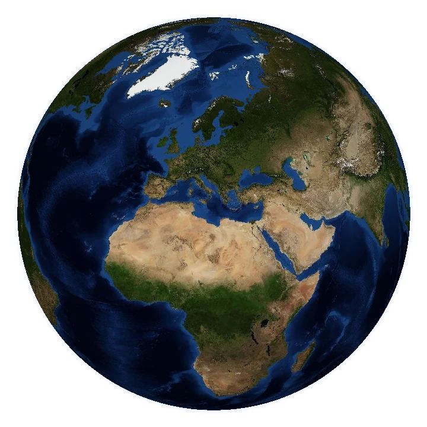

20 years of NASA fire data. One fair calendar.
Loading live data · Data: NASA FIRMS
Earth: NASA GIBS / Blue Marble · Stars: Yale Bright Star Catalogue (NASA HEASARC)

Loading live data · Data: NASA FIRMS
Earth: NASA GIBS / Blue Marble · Stars: Yale Bright Star Catalogue (NASA HEASARC)